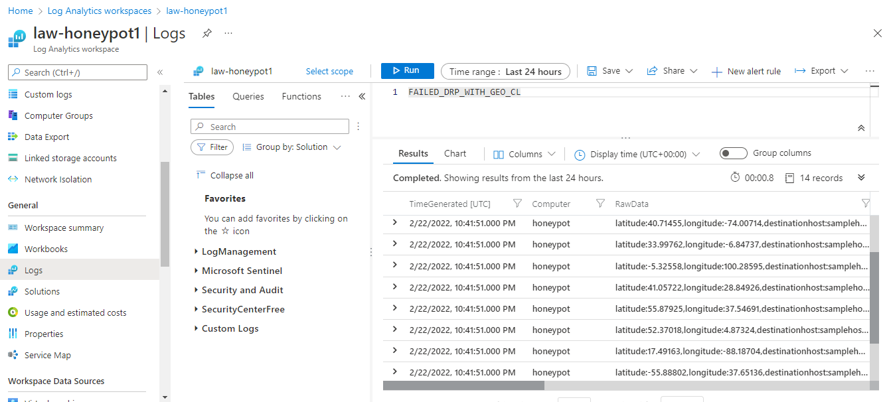
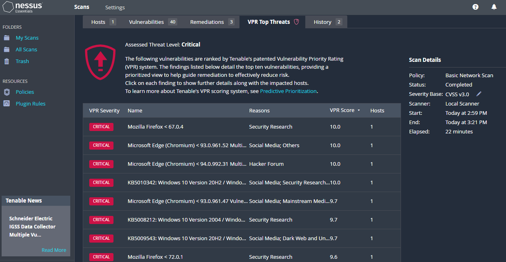
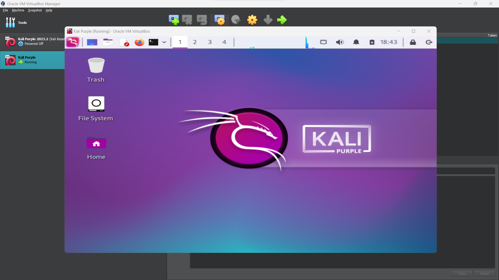

Featuring:
- SIEM Solutions such as Elastic, Sentinel, and Security Onion
- EDR solutions such as LimaCharlie
- Vulnerability Scanning with Nessus Essentials
- Penetration Testing & Ethical Hacking TTPs with Kali Linux
- Virtualization platforms such as VMWare Workstation Pro and Oracle VirtualBox
- Virtual Machine installation guides for Kali, Kali Purple, and Metasploitable


Deployed and configured Security Onion on VMware Workstation Pro, leveraging Security Onion
Console, Network Miner, Wireshark, MITRE ATT&CK, and Virus Total for malware traffic analysis
and threat hunting. Investigated alerts, identified malicious traffic, extracted Indicators of
Compromise (IOCs), and pinpointed infected hosts in Windows Active Directory, culminating in a
comprehensive incident report.

Established a Microsoft Sentinel SIEM lab using Azure VMs and Log Analytics Workspace, connecting
it to a Windows 10 VM serving as a honeypot for actively monitoring incoming global RDP Brute
Force attacks. Developed a PowerShell script leveraging the geolocation.io API to perform
geolocation lookups on attackers, enhancing threat intelligence and mapping capabilities within
Sentinel.

Demonstrated effective vulnerability management by leveraging Nessus Essentials to perform a
credentialed scan and identified and remediated 156 Critical and High vulnerabilities in a
Windows 10 VM, highlighting proficiency in identifying and remediating security risks in
controlled environments.

Authored comprehensive installation guides for Kali Linux, Kali Purple, and Metasploitable
virtual machines, tailored for Oracle VirtualBox and VMWare Workstation Pro platforms,
facilitating streamlined setup and configuration processes for cybersecurity enthusiasts.